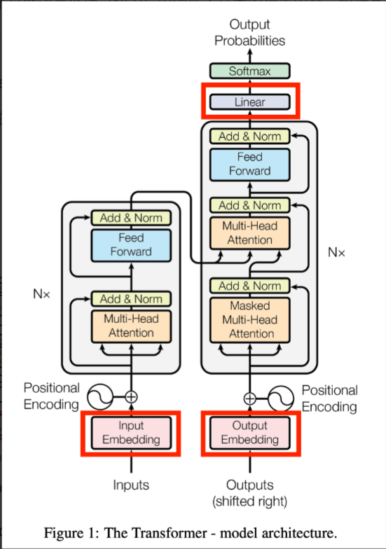

Word Embeddind¶
要让transformer模型理解每一个token，需要把词语转化为具有语义的向量（embedding）
词嵌入(Word Embedding)用于将离散的token映射到连续的向量空间，使语义相近的词在向量空间中接近

编码¶
基础语义单元的数字化方法及其问题¶
首先要搞明白一件事儿，所谓的编码和解码这个码到底是个什么码？
人工智能最典型的应用是图像识别和自然语言处理（NLP）。卷积神经网络（CNN）最早应用于图像识别，因为图像中的像素是并行结构。而语言则具有时序性，词与词之间有强先后关系，语义也与此相关。
为了解决这种序列到序列（sequence-to-sequence）的问题，比如机器翻译中输入输出长度不一致的情况，人们引入了编码器-解码器结构，并使用了循环神经网络（RNN）。RNN通过其循环结构，能够捕捉语言的时序信息。
Transformer模型虽然最初解决的是同样的问题，但它并没有延续RNN的技术路线，而是另起炉灶。不过它同样保留了编码器-解码器结构。尽管如此，已有研究表明，从数学角度看，Transformer与RNN甚至CNN在本质上是一致的。这个话题我们后续还会深入探讨。
那么，为什么无论是RNN还是Transformer，在做机器翻译时都采用编码-解码结构呢？我们可以从语言学习的本质出发来理解。
以学语言为例，我们在不懂英文的情况下学习英文，是通过实物（如“苹果”）将两种语言符号联系起来，建立语义对应。但机器无法直接接触现实世界实体，只能通过大量文本上下文来推断词语之间的语义关系。
因此，机器翻译的关键在于：如何从纯文本中提取出一种通用的语义表示，使得不同语言的词可以通过这一表示实现对齐。这就引出了“编码”的概念——即剥离语言形式差异，提取出纯粹的语义关系。
这种语义关系应满足两个条件：
-
数字化表示；
-
数值之间能体现语义相似性或关联性。
一个直观的想法是用高维空间中的向量来表示语义。例如，“香蕉”可能是一个向量 [1000]，而“猴子”接近于它，原子能则离得较远。这种向量空间能够体现出语义之间的距离关系。
在实际操作中，我们常使用 tokenizer（分词器） 和 one-hot 编码 来对语言进行数字化处理。它们分别代表了两种极端方式：
- Tokenizer 将每个 token 映射为一个整数 ID，相当于投射到一维空间。这种方式信息密度高，但难以表达复杂的语义关系。
- One-hot 编码则为每个 token 分配一个独立维度，形成一个高维稀疏向量。虽然组合语义容易表示，但所有 token 彼此正交，缺乏语义相似性的表达。
两者各有优劣：一个是“高密度低维”，一个是“低密度高维”。它们都不能很好地满足我们对语义编码的两个基本要求。
所以，我们需要一种更合理的语义表示方法，既能数字化，又能反映语义之间的相对关系。这也是后来词嵌入（word embedding）等技术出现的原因。
既然如此，我们就可以考虑找一个维度适中的“中间空间”来完成语义编码与解码。这个空间通常被称为“嵌入空间”（embedding space），它既不是一维也不是极高维，而是一个折中方案。
实现这个目标有两个方向：
-
从低维升维（如基于 token ID 扩展）；
-
从高维降维（如对 one-hot 编码进行压缩）。
通常选择后者，因为压缩比还原更容易控制。
空间变换与线性变换的理解及矩阵的应用¶
提到降维，自然想到线性代数中的矩阵乘法：一个向量与矩阵相乘，本质上就是一种空间变换。（建议去看MIT的线性代数公开课和3blue1brown视频辅助理解）
我们可以把这种运算理解为坐标系之间的转换。例如，原向量在旧坐标系下的表示，通过矩阵变换后，变成了新坐标系下的表示。
矩阵的每一列代表了新坐标系的一个基向量，而矩阵乘法就是将原向量在这个新基下的投影重新计算出来。
更进一步地，矩阵乘法不仅可用于坐标系变换，也可以看作是对向量本身的变换——比如旋转、缩放等。这种变换是线性的，意味着直线仍保持为直线，不会变成曲线。只有引入二次型（如 \(x^T A x\)）时，才可能得到非线性的几何结构（如椭圆、抛物线等）。
在机器学习中，尤其是 Transformer 等模型中，这种空间变换非常关键。它可以理解为数据从原始输入空间到语义空间的一种映射过程。多个向量组成的矩阵与变换矩阵相乘，就相当于一批数据同时经历一次统一的空间转换。
需要注意的是，矩阵乘法是不可交换的，顺序不同意义也不同。这类似于函数式编程中的数据流处理：前一个矩阵是数据集合，中间矩阵是变换规则，整个过程体现了数据在一系列空间中的流动与重构。
我对“空间变换”的理解是：某个空间中的对象通过一个或一组函数映射到另一个空间中。如果这些函数都是一次函数，这种变换就是线性变换。
从几何角度看，线性变换会保持一些关键特性不变： - 原空间中不同的点，在新空间中仍是不同的点； - 共线的点仍然共线； - 平行向量仍然平行； - 向量长度可能变化，但它们的比例关系保持不变。
为了方便描述这些变换，我们引入了矩阵。矩阵本质上就是一组线性变换的系数。它不仅是一种数学形式上的简化，更重要的是它让空间变换变得直观易懂。比如通过矩阵的行列数，我们可以立刻知道变换前后空间的维度是否发生了变化。
在矩阵乘法中，前一个矩阵通常表示数据（如一组向量），后一个矩阵则表示变换规则。两者相互独立，说明变换规则不依赖于具体的数据，而是决定整个空间如何被改变。
进一步地，我们可以引入行列式来衡量方阵所代表的空间变换对面积（二维）或体积（三维）的影响。行列式的值就表示变换后相对于原空间的拉伸或压缩比例。
此外，矩阵的其他性质（如对称性、秩等）也对应着空间变换的不同特征： - 对称矩阵意味着变换前后向量的内积保持不变； - 矩阵的“秩”表示该变换实际占用的空间维度，即用最少多少个线性无关向量就能完整描述所有输出。
总的来说，矩阵是一种工具，而“空间变换”只是其中一种理解方式。换个角度，也可以把它看作是一组向量之间的关系。不同理解方式适用于不同场景，比如注意力机制中就会有第三种理解方式。
回到AI模型本身，神经网络中的隐藏层其实就是在进行空间变换。隐藏层神经元的数量决定了变换后的空间维度——比输入多是升维，少则是降维。
有了这些基础认知，再去理解词嵌入、Transformer 中的注意力机制等内容，就会顺畅很多。
神经网络与矩阵运算的关系及非线性变换的重要性¶

神经网络的数学表达本质上是一系列矩阵运算，这也解释了为什么显卡（GPU）在训练神经网络时如此重要。因为显卡原本就是为处理3D图形中的空间计算设计的，而这些计算和神经网络中的矩阵操作非常相似。
不过，神经网络与纯矩阵运算还是有两个关键区别：
-
加入了偏置项（Bias）：除了权重矩阵乘法（\(W_x\)），还加上了一个偏置项 b。从几何角度看，矩阵乘法相当于对空间进行旋转或拉伸，而加偏置则相当于对整个空间进行了平移。
-
引入了非线性激活函数：线性变换只能实现一一映射，而神经网络通过激活函数实现了非线性变换，从而能将复杂的数据结构压缩到更小的空间中。例如，在分类任务中，输入空间中大量代表“猫”的图像最终都会被映射到输出空间中的同一个点。
从这个角度看，神经网络不仅是在做空间变换，更是在学习如何通过非线性方式把数据“折叠”成更容易区分的形式。
关于神经网络的升维与降维，可以从隐藏层的角度理解： - 隐藏层中神经元的数量决定了变换后的空间维度； - 增加神经元数量，相当于将数据映射到更高维空间，使得原本线性不可分的数据变得可分； - 只要维度足够高，总能找到一个超平面来完成分类任务。
一个典型的神经网络结构包括输入层、隐藏层和输出层： - 输入层接收原始数据； - 隐藏层负责对数据进行升维或特征提取； - 输出层输出最终预测结果。
神经网络的本质是通过一系列带偏置和激活函数的矩阵运算，实现从输入空间到目标空间的非线性映射。
神经网络的维度变换与特征抽象¶
神经网络中除了输入层和输出层之外的部分统称为隐藏层。它的作用是让模型具备更强的表达能力。
如果仅从“升维”角度理解隐藏层会遇到问题：很多神经网络在隐藏层中反而逐步减少神经元数量，也就是降维了。那该怎么解释这种设计呢？
我们来想一个实际场景：输入可能是原始图像的像素点（高维），目标是判断情绪（低维）。虽然最终输出维度更低，但中间隐藏层的每个节点其实代表了对输入数据的抽象特征。
例如： - 第一层可能提取局部特征（如眼睛、嘴巴）； - 第二层则组合这些特征，形成更高层次的语义（如“微笑”、“皱眉”）； - 隐藏层越深，抽象程度越高。
这种分层抽象的好处是底层特征可复用。比如数字“8”的上下两个圆圈可以拆解为多个圆弧特征，这些特征也能被“6”、“5”等其他数字复用。
需要注意的是，神经网络自动学习的特征不一定符合人类直觉，但它们仍然能有效支撑最终判断。
进一步地，CNN 比全连接网络更适合特征复用，因为它不依赖位置信息，而是通过滑动窗口提取通用模式。
有了对升维、降维和特征抽象的理解后，我们就可以自然过渡到编码与解码的问题。
在NLP中，编码的过程就是把文本中的token先转换成独热编码，再通过矩阵乘法进行降维，映射到一个低维空间中。这个过程叫做嵌入（Embedding），也称作词嵌入（Word Embedding）。
这个低维空间（潜空间）剥离了语言的形式差异（如发音、写法），只保留纯粹的语义关系。不同语言（如中文和英文）可以通过各自词汇表分别嵌入到独立的浅空间，再通过融合算法统一起来；也可以一开始就共享词汇表，训练出一个统一的语义空间。
无论是哪种方式，只要获得了两个语言共享的语义空间，就可以实现翻译：先把中文编码进这个空间，再从该空间解码成英文，就能保证语义一致。
实际上，编解码的本质是将复杂对象转化为便于处理的中间表示，就像“曹冲称象”——大象不好称重，就换成石头来操作。
这样一来，在这个中间空间里的一切操作都变成了纯粹的数学计算，大大简化了任务难度。
AI模型的语义空间与编码解码原理¶
通过前面的介绍，我们可以理解：编码与解码中的“码”或“潜空间”，其实代表了AI模型真正理解语义的能力。它不再像哲学家约翰·塞尔提出的“中文房间”那样——只是机械查表、模仿理解。
在“中文房间”中，系统没有真正的语义理解，只是根据输入查找输出。而现在的AI模型通过潜空间进行处理，这个空间是一个连续的、高维的语义表示空间。
一个 token 被嵌入成向量后，它的每一维都可能代表一个独立的语义特征。比如“苹果”这个词，可能在一个维度上表示“水果”，另一个维度表示“手机”，还有一个维度表示“甜味”等。虽然这些维度对人类来说不一定直观可解释，但它们构成了一个能被模型有效使用的语义表示。
这种表示方式类似于图像中的通道（如RGB）：每个通道单独看可能不完整，但组合在一起就能表达完整的语义。词向量也可以通过矩阵运算进行升维或降维，就像CNN中使用1×1卷积核调整通道数一样。
相比“手册式”的映射，潜空间是连续的，这意味着即使遇到训练时未见过的内容，模型也能在空间中找到合理的位置，并生成合理的输出。而手册式的key-value映射是离散的、有限的，无法应对未知情况。
这也成为判断AI是否“理解”语言的一个重要标准：能否在没有见过的情况下生成合理内容。
那么，如何构建这样的潜空间？这就需要机器学习方法来实现从token到潜空间的映射。
谷歌2013年提出的 Word2Vec（包括 CBOW 和 Skip-gram 两种方法），就是其中一种经典方案。它的目标不是完成某个具体任务，而是训练出一个高质量的嵌入矩阵，用于将 token 映射到潜空间。这更像是“编词典”，而不是“培养作家”。
传统模型训练的目标是让模型输出正确结果；而 Word2Vec 的目标是让模型参数（嵌入矩阵）本身有意义。因此它不需要复杂的激活函数，计算也更高效。
以 CBOW 模型为例：
- 输入是一组上下文 token；
- 中间的 token 被隐藏；
- 模型的任务是通过上下文预测中间词；
- 预测误差通过反向传播更新嵌入矩阵；
- 最终得到的就是一个能捕捉语义关系的词向量空间。
这种方式让模型学会了 token 之间的语义联系，为后续各种NLP任务提供了强大的基础支持。
词向量模型原理及实现细节¶

我们来解释一下 CBOW 模型的基本原理：
为什么把上下文词向量加在一起，就能预测中间那个词？
其实可以类比高中物理中的“力的合成”：
-
上下文中已知的词向量看作是“分力”；
-
中间缺失的那个词向量就是这些分力的“合力”。
换句话说，一个词的语义可以从它的上下文中推断出来；反过来，有了这个词的语义，也应该能还原出它的上下文。
这正是 CBOW 的训练方式：输入上下文词，目标是预测中间词。模型通过不断调整嵌入矩阵，使得这种“合力关系”尽可能准确。
虽然它不能像人类一样完成精确的完形填空（比如“这是一个 ___ 苹果”），但这不是它的目的。它的目标是训练出一个高质量的嵌入空间，让语义相近的词在空间中也靠近。
你可以把它理解为“AI版词典”：
每个词都被其他词定义，就像词典中用其他词解释一个词。Word2Vec 训练出来的潜空间是语言环境的客观反映，不依赖作者意图。主观性体现在文本中词的选择和顺序，这部分则由后续的注意力机制去处理。

Skip-gram 是 CBOW 的反向版本：
输入一个词，目标是预测它的上下文词。两者都属于自监督学习方法，不需要人工标注数据，只要有文本就可以训练。
从数学上看，这个过程可以用两个矩阵表示：
- W：将独热编码映射到潜空间（降维）；
- W'：将潜空间还原成输出（升维）。
理论上 W 和 W' 应该互为伪逆，只要一个训练好，另一个可以解析求解。但在实际实现中，它们通常作为两个独立矩阵分别训练，因为矩阵求逆计算复杂度高（O(n³)），而梯度下降更简单高效（O(n)）。
另外，CBOW/Skip-gram 的隐藏层没有偏置项也没有激活函数，因为它本质上是在做线性变换——向量的合成与分解，不需要非线性操作。
这是标准的 Word2Vec 方法，它的核心是训练出一个“词典式”的嵌入矩阵 W，只捕捉单个词的语义 。如果想表达由多个词组成、具有准确含义的句子，这种模型就不够用了,就需要transformer了。
编码方式演变¶
One-Hot编码（独热编码）¶
在NLP的早期阶段，One-Hot编码是一种常用的词表示方法。 每个词被表示为一个长度为词汇表大小的向量，其中对应词的位置为1，其余位置为0。
例如，假设词汇表包含以下词汇：
| 词汇 | One-Hot 向量 |
|---|---|
| apple | [1, 0, 0, 0, 0] |
| banana | [0, 1, 0, 0, 0] |
| cherry | [0, 0, 1, 0, 0] |
| date | [0, 0, 0, 1, 0] |
| elder | [0, 0, 0, 0, 1] |
缺点：
- 高维稀疏性：随着词汇表的增大，向量维度也随之增加，导致数据稀疏，计算效率低下。
- 无法捕捉语义关系：不同词的One-Hot向量彼此正交，无法反映词与词之间的语义相似性。
基于共现矩阵的表示¶
为克服One-Hot编码的不足，研究者提出了共现矩阵的方法。通过统计词汇在一定窗口内的共现频率，构建词与词之间的关联矩阵。
示例： 假设有以下句子：
可以构建如下的共现矩阵：| I | like | enjoy | NLP | deep | learning | flying | |
|---|---|---|---|---|---|---|---|
| I | 0 | 2 | 1 | 1 | 1 | 1 | 1 |
| like | 2 | 0 | 0 | 1 | 1 | 1 | 0 |
| enjoy | 1 | 0 | 0 | 0 | 0 | 0 | 1 |
| NLP | 1 | 1 | 0 | 0 | 0 | 0 | 0 |
| deep | 1 | 1 | 0 | 0 | 0 | 1 | 0 |
| learning | 1 | 1 | 0 | 0 | 1 | 0 | 0 |
| flying | 1 | 0 | 1 | 0 | 0 | 0 | 0 |
缺点：
- 共现矩阵也存在高维稀疏的问题，且无法捕捉有效复杂语义关系。
Word2Vec¶
本质上是只具有一个隐含层的神经元网络，其余详细介绍上文讲过了。
输入是采用独热编码的词汇表向量，输出也是独热编码词汇表向量。
1.1.2.2.2 GloVe¶
GloVe通过对全局词共现矩阵进行矩阵分解，学习词的向量表示，能够更好地捕捉全局的语义信息。
FastText¶
FastText模型考虑了词的内部结构（如字符n-gram），能够处理未登录词和拼写错误的词汇，提升了模型的泛化能力。
ELMo¶
ELMo基于双向LSTM，通过预训练语言模型，为每个词生成上下文相关的向量表示，即同一个词在不同上下文中有不同的表示。
BERT¶
BERT基于Transformer架构，属于大语言模型（之后会详细介绍）。其采用双向编码器，能够更深入地理解上下文信息。
LLM中的词嵌入¶
嵌入层的实现¶
- 词嵌入层（wte）:将离散的子词ID映射到连续向量
词嵌入共享¶
在现在一些大模型架构中，会存在输出端重用输入端Embedding权重的做法（Tied Embeddings/Coupled Embeddings）具体来看GPT2代码中：
其主要原因是在gpt2时代，模型主干部分不大且词表很大时，Embedding层的参数量很大，如果输出端再新增一个独立的同样大小的权重矩阵的话，会导致显存消耗的激增。
具体实现上是输出端的embedding使用的输入端embedding的转置（伪逆）。
但是这样也会带来若干问题，具体可看这篇博文语言模型输出端共享Embedding的重新探索
所以一些大语言模型，例如llama2，使用的是单独的output embedding，参考模型config.json:
这也是分辨模型是否共享权重最简单的方法，默认共享。